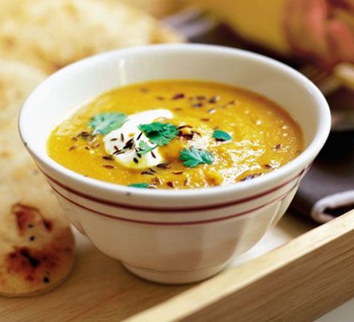

Spiced carrot & lentil soup

Description
Soup is a primarily liquid food, generally served warm or hot (but may be cool or cold), that is made by combining
ingredients of meat or vegetables with stock, milk, or water. Hot soups are additionally characterized by boiling
solid ingredients in liquids in a pot until the flavors are extracted, forming a broth. Soups are similar to stews,
and in some cases there may not be a clear distinction between the two; however, soups generally have more liquid
(broth) than stews.
Ingredients
For our soup, you will need the following ingredients (but you may season to taste as you wish):
- 2 tsp cumin seeds
- pinch chilli flakes
- 2 tbsp olive oil
- 600g carrots, washed and coarsely grated (no need to peel)
- 140g split red lentils
- 1l hot vegetable stock (from a cube is fine)
- 125ml milk
- plain yogurt and naan bread, to serve
Method
-
Heat a large saucepan and dry-fry 2 tsp cumin seeds and a pinch of chilli flakes for 1 min, or until they
start to jump around the pan and release their aromas.
-
Scoop out about half with a spoon and set aside. Add 2 tbsp olive oil, 600g coarsely grated carrots, 140g
split red lentils, 1l hot vegetable stock and 125ml milk to the pan and bring to the boil.
-
Simmer for 15 mins until the lentils have swollen and softened.
-
Whizz the soup with a stick blender or in a food processor until smooth (or leave it chunky if you prefer).
-
Season to taste and finish with a dollop of plain yogurt and a sprinkling of the reserved toasted spices.
Serve with warmed naan breads.